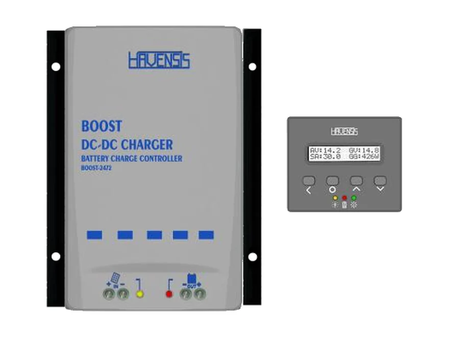
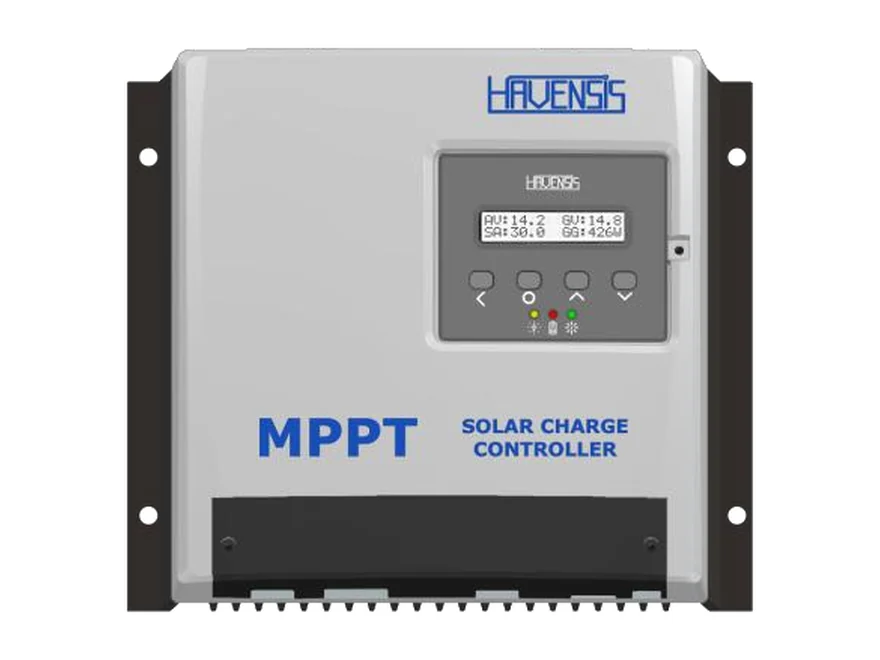
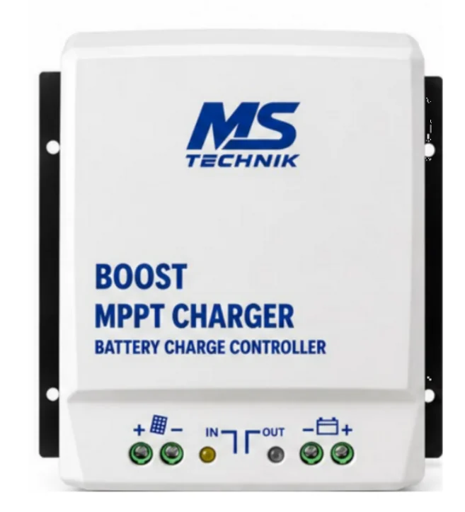
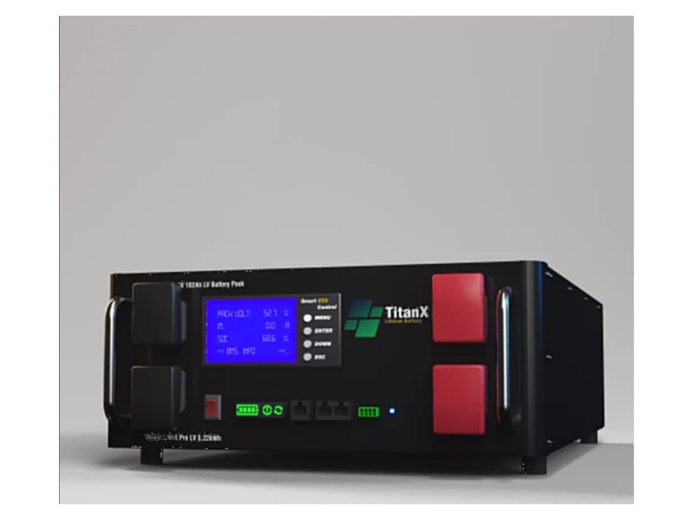

48 V karavan sistemleri
Aracın 12/24 V alternatöründen 48 V yaşam aküsü grubunu yolda doldurur; yüksek güçlü inverter yükleri için enerji hazır olur.

12/24 V araç aküsünden 36, 48, 60 ya da 72 V akü grubunu şarj eden yükseltici (BOOST) DC-DC şarj cihazı. Karavan ve tekneler için tasarlandı: yolda alternatörden yüksek gerilimli akü sistemini de doldurur.
₺8.250 ≈ $168
KDV dahil fiyattır.
💰 Havale/EFT ile: ₺8.000
Havensis BOOST DCDC-2448, 12–32 V girişi yükselterek 36, 48, 60 ya da 72 V akü grubuna şarj akımı olarak aktaran yükseltici DC-DC şarj cihazıdır. Karavan ve tekneler için özel tasarlanmıştır.
Yüksek güçlü inverter kullanan karavan ve tekne sistemleri sıklıkla 48 V akü grubuyla kurulur; elektrikli tekne motorları ve bazı taşıtların akü grupları da 36–72 V aralığındadır. Aracın alternatörü ise 12 ya da 24 V'tur. BOOST DCDC-2448 bu farkı kapatır: motor çalışırken yüksek gerilimli akü grubunu da doldurur.
Girişten en fazla 20 A çeker ve aküye en fazla 15 A şarj akımı verir; dönüştürücü verimi %95'tir. Dijital ekran bağlantısı, 5 m uzatma kablosu ve gelişmiş koruma devreleri vardır.
Dahili Bluetooth isteğe bağlıdır ve siparişte belirtilir; bu seçenek için siparişten önce bize yazın.
Cihaz, Havensis tarafından Türkiye'de üretilir. Türkiye'nin her yerine kargo ile gönderiyoruz; Antalya bölgesinde isteğe bağlı yerinde kurulum yapıyoruz.
| Marka | Havensis |
| Model | BOOST DCDC-2448 |
| Giriş gerilimi | 12–32 V (12/24 V sistemler) |
| Şarj edilen akü | 36/48/60/72 V |
| Maks. giriş akımı | 20 A |
| Maks. şarj akımı | 15 A |
| Dönüştürücü verimi | %95 |
| Ekran | Dijital ekran bağlantısı, 5 m uzatma kablosu |
| Koruma | Gelişmiş koruma devreleri |
| Bluetooth | Dahili, isteğe bağlı (siparişte belirtilir) |
| Tasarım | Karavan ve tekneler için özel tasarım |
| Cihaz boyutu | 162 × 210 × 70 mm |
| Üretim | Yerli üretim (Türkiye) |
Değerler üreticinin (Havensis) ürün listesinden alınmıştır. Listede olmayan bir değeri merak ediyorsanız bize yazın; üreticiden teyit edelim.
DC-DC akü şarj cihazı nedir? GES Sözlüğü →
Aracın 12/24 V sisteminden 36–72 V akü grubunu doldurmanız gereken her yerde.
Aracın 12/24 V alternatöründen 48 V yaşam aküsü grubunu yolda doldurur; yüksek güçlü inverter yükleri için enerji hazır olur.
Motor çalışırken 36–72 V akü grubunu, örneğin elektrikli tekne motorunun ya da ev sisteminin aküsünü şarj eder.
Seri bağlı 36, 48, 60 ve 72 V akü gruplarını 12/24 V kaynaktan tek cihazla şarj eder.
Cihaz 12/24 V marş aküsü ile 36–72 V akü grubunun arasına bağlanır.
📟 Dijital ekran 5 m uzatma kablosuyla cihaza bağlanır; şarj görebileceğiniz bir yerden izlenir.
Cihazın girişini 12/24 V marş aküsüne bağlayın. Giriş akımı 20 A'e çıkabildiği için kabloyu ve sigortayı buna göre seçin.
Çıkışı 36–72 V akü grubuna bağlayın ve akünün yakınına uygun bir sigorta koyun.
Dijital ekranı 5 m kabloyla görebileceğiniz yere alın; şarjı buradan izleyin.
Aynı siparişte alın; hepsi aynı kargoyla gelsin.

48 V akü grubunu güneşten de şarj etmek için 150 V girişli MPPT.
₺16.200Ürünü İncele →
Düşük gerilimli panelden 24–72 V akü grubuna doğrudan şarj.
₺7.200Ürünü İncele →
48 V sistem için 5,22 kWh LiFePO₄ akü.
₺73.400Sepete ekle →Hayır. Cihaz girişten en fazla 20 A çeker; aküye giden akım giriş gerilimine ve akü gerilimine bağlıdır. Örnek: 24 V girişte 24 V × 20 A = 480 W çekilir; %95 verimle 48 V aküye yaklaşık 8–9 A gider. 12 V girişte aynı akü için yaklaşık 4–5 A'dir. En yüksek akım 24 V girişte ve 36 V akü grubunda elde edilir.
36, 48, 60 ve 72 V akü gruplarıyla. Akü grubunuzun gerilimini, tipini ve şarj değerlerini siparişte bize yazın; uygunluğunu birlikte kontrol edelim.
12 ya da 24 V elektrik sistemi olan karavan, motokaravan ve teknelerde; cihazın girişi 12–32 V'u kabul eder.
Bu cihaz akü ve alternatör girişi için tasarlanmıştır. Panelden 24–72 V akü grubunu şarj etmek için MPPT'li bir cihaz gerekir: BOOST MPPT şarj kontrol cihazımıza bakın.
Dahili Bluetooth isteğe bağlıdır ve siparişte belirtilir. Bu seçenek için siparişten önce bize yazın.
Türkiye'nin her yerine kargo ile gönderiyoruz; kurulumu bir oto elektrikçisi yapabilir. Antalya bölgesinde isteğe bağlı yerinde kurulum yapıyoruz.
12/24 V yaşam aküsünü alternatörden şarj etmek için DCDC-1224 akü şarj cihazlarımıza bakın.
Stok ve teslimat için WhatsApp'tan yazın; aynı gün dönüş yapıyoruz.